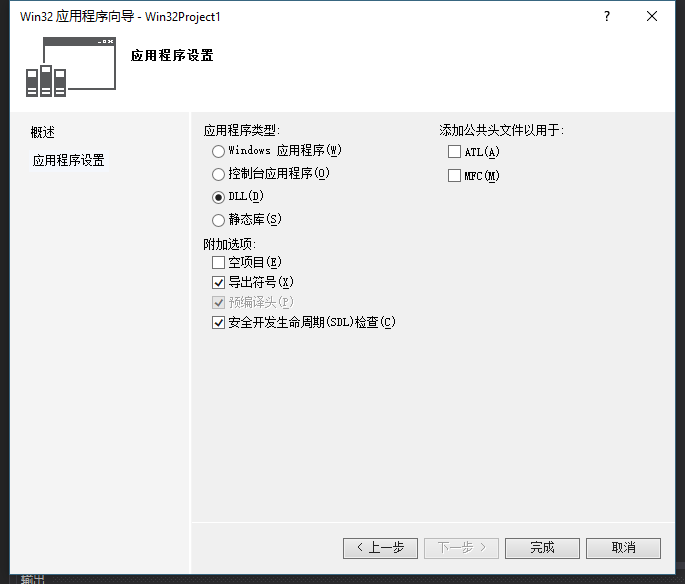
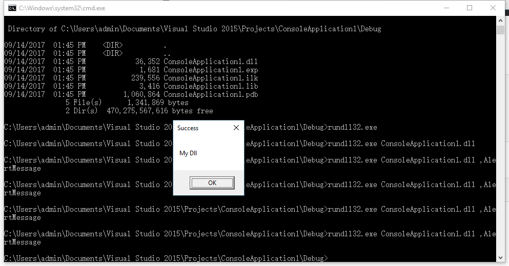
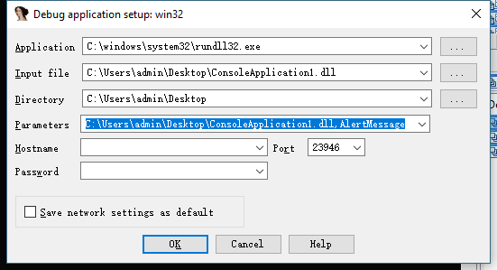

0x01 编译DLL项目
打开VS 在文件->新建->项目选择Win32项目，在应用程序中设置

写一个函数
VOID AlertMessage() { MessageBox(NULL, L"My Dll", L"Success", MB_OK); }
|
将函数使用C的方式导出，如果不使用C的方式导出CRT会填上@@等其他的符号。
extern "C" _declspec(dllexport) VOID AlertMessage();
|
随后生成DLL。
使用rundll32.exe调用DLL中的函数来测试是否成功，rundll32.exe调用DLL中的函数有两种方式：
rundll32.exe MyDll.dll,AlertMessage ，调用名称为AlertMessage的导出函数rundll32.exe MyDll.dll,#1 ，调用一号导出函数

0x02 调用DLL程序的流程
DLL程序的调用入口其实并不是DllMain，而是DllEntryPoint其实也就是_DllMainCRTStartup，这个是微软的VS默认的入口函数，不过可以使用 /ENTRY: 链接器选项指定其他入口点函数，不过这个微软并不推荐。
所谓的DllEntryPoint是CRT（C Runtime）自动生成的，在调用一个函数之前，完成了变量初始化、线程剥离等工作。
BOOL __stdcall _DllMainCRTStartup(HINSTANCE hinstDLL, DWORD fdwReason, LPVOID lpReserved) { if ( fdwReason == 1 ) __security_init_cookie(); return dllmain_dispatch(hinstDLL, fdwReason, lpReserved); }
|
程序首先会初始化security_cookie，接着进入dllmain_dispatch，此时fdwReason = 1
| fdwReason |
操作 |
| 0 |
DLL_PROCESS_DETACH |
| 1 |
DLL_PROCESS_ATTACH |
| 2 |
DLL_THREAD_ATTACH |
| 3 |
DLL_THREAD_DETACH |
int __cdecl dllmain_dispatch(HINSTANCE__ *const instance, const unsigned int reason, void *const reserved) { void *v4; int v5; int v6; if ( !reason && _proc_attached <= 0 ) return 0; if ( reason != 1 && reason != 2 ) { v4 = reserved; LABEL_9: v6 = DllMain(instance, reason, v4); v5 = v6; if ( reason == 1 && !v6 ) { DllMain(instance, 0, v4); dllmain_crt_dispatch(instance, 0, v4); dllmain_raw(instance, 0, v4); } if ( !reason || reason == 3 ) { v5 = dllmain_crt_dispatch(instance, reason, v4); if ( v5 ) v5 = dllmain_raw(instance, reason, v4); } return v5; } v4 = reserved; v5 = dllmain_raw(instance, reason, reserved); if ( v5 ) { v5 = dllmain_crt_dispatch(instance, reason, reserved); if ( v5 ) goto LABEL_9; } return v5; }
|
接着程序会进入dllmain_crt_dispatch函数，我们继续看看这个函数
int __userpurge dllmain_crt_dispatch@<eax>(int a1@<edi>, HINSTANCE__ *const instance, const unsigned int reason, void *const reserved) { int result; if ( reason ) { if ( reason == 1 ) { result = dllmain_crt_process_attach(a1); } else { if ( reason == 2 ) { LOBYTE(result) = __scrt_dllmain_crt_thread_attach(); } else { if ( reason != 3 ) return 1; LOBYTE(result) = __scrt_dllmain_crt_thread_detach(); } result = (unsigned __int8)result; } } else { result = dllmain_crt_process_detach(); } return result; }
|
这个函数会调用dllmain_crt_process_attach，看看这个函数
int __usercall dllmain_crt_process_attach@<eax>(int a1@<edi>) { if ( __scrt_initialize_crt(0) ) { __scrt_acquire_startup_lock(); if ( __scrt_current_native_startup_state ) __scrt_fastfail(1, a1, 7u); __scrt_current_native_startup_state = 1; if ( __scrt_dllmain_before_initialize_c() ) { _RTC_Initialize(); atexit(_RTC_Terminate); __scrt_initialize_type_info(); atexit(__scrt_uninitialize_type_info); __scrt_initialize_default_local_stdio_options(); if ( !_initterm_e((int)&__xi_a, (int)&__xi_z) ) { if ( __scrt_dllmain_after_initialize_c() ) { _initterm((int)&__xc_a, (int)&__xc_z); __scrt_current_native_startup_state = 2; } } } JUMPOUT(&_LN14); } return 0; }
|
这里有两个比较重要的函数_initterm_e和_initterm。这两个函数会从[__xi_a, __xi_z]遍历到[__xc_a, __xc_z]如果函数指针存在，则去执行这个函数。
0x03 回顾Xshell的nssock2.dll
Xshell的入口点是DllEntryPoint
BOOL __stdcall DllEntryPoint(HINSTANCE hinstDLL, DWORD fdwReason, LPVOID lpReserved) { if ( fdwReason == 1 ) __security_init_cookie(); return __DllMainCRTStartup(hinstDLL, fdwReason, lpReserved); }
|
继续看__DllMainCRTStartup
int __cdecl __DllMainCRTStartup(HINSTANCE hinstDLL, DWORD fdwReason, LPVOID lpvReserved) { signed int v3; BOOL v4; v3 = 1; dword_100180B0 = fdwReason; if ( fdwReason || dword_100188D8 ) { if ( fdwReason != 1 && fdwReason != 2 ) goto LABEL_22; if ( _RawDllMainProxy ) v3 = _RawDllMainProxy(hinstDLL, fdwReason, lpvReserved); if ( v3 ) { v3 = _CRT_INIT((int)hinstDLL, fdwReason, (int)lpvReserved); if ( v3 ) { LABEL_22: v4 = DllMain(hinstDLL, fdwReason, lpvReserved); v3 = v4; if ( fdwReason == 1 && !v4 ) { DllMain(hinstDLL, 0, lpvReserved); _CRT_INIT((int)hinstDLL, 0, (int)lpvReserved); if ( _RawDllMainProxy ) _RawDllMainProxy(hinstDLL, 0, lpvReserved); } if ( !fdwReason || fdwReason == 3 ) { v3 = _CRT_INIT((int)hinstDLL, fdwReason, (int)lpvReserved) != 0 ? v3 : 0; if ( v3 && _RawDllMainProxy ) v3 = _RawDllMainProxy(hinstDLL, fdwReason, lpvReserved); } } } } else { v3 = 0; } dword_100180B0 = -1; return v3; }
|
之后会继续通过_CRT_INIT初始化。
.text:1000D2CE .text:1000D2CE loc_1000D2CE: ; CODE XREF: _CRT_INIT(x,x,x)+177j .text:1000D2CE push offset unk_1000F6D0 .text:1000D2D3 push offset unk_1000F6C4 .text:1000D2D8 mov dword_10018A80, 1 .text:1000D2E2 call _initterm_e .text:1000D2E7 pop ecx .text:1000D2E8 pop ecx .text:1000D2E9 test eax, eax .text:1000D2EB jnz short loc_1000D280 .text:1000D2ED push offset unk_1000F6C0 .text:1000D2F2 push offset unk_1000F690 .text:1000D2F7 call _initterm .text:1000D2FC pop ecx .text:1000D2FD mov dword_10018A80, edi
|
看看unk_1000F690
.rdata:1000F690 _rdata segment para public 'DATA' use32 .rdata:1000F690 assume cs:_rdata .rdata:1000F690 ;org 1000F690h .rdata:1000F690 unk_1000F690 db 0 ; DATA XREF: _CRT_INIT(x,x,x)+1A6o .rdata:1000F691 db 0 .rdata:1000F692 db 0 .rdata:1000F693 db 0 .rdata:1000F694 dd offset ??__EafxModuleState@@YAXXZ ; `dynamic initializer for 'afxModuleState''(void) .rdata:1000F698 dd offset sub_1000E450 .rdata:1000F69C dd offset sub_1000E470 .rdata:1000F6A0 dd offset sub_1000E490 .rdata:1000F6A4 dd offset sub_1000E4B0 .rdata:1000F6A8 dd offset sub_1000E4D0 .rdata:1000F6AC dd offset sub_1000E4F0 .rdata:1000F6B0 dd offset sub_1000E500 .rdata:1000F6B4 dd offset sub_1000E510 .rdata:1000F6B8 dd offset sub_1000E520 .rdata:1000F6BC dd offset sub_1000E530
|
其中有一个函数的指针指向的恶意代码。所以Xshell的nssock2.dll执行恶意代码的流程就是通过加载DLL后，通过CRT初始化执行了恶意代码。
0x04 如何使用IDA调试DLL
使用IDA调试dll，dll必须要又一个宿主程序来执行。在windows上可以使用rundll32.exe来执行所以，在IDA中可以这样设置

0x05 总结
使用MSVC编译DLL会默认加上CRT初始化，只需要分析一下CRT初始化流程就能很好的了解DLL的调用过程了。本文是个人拙劣的分析，如果有错误的地方还请大佬指正，谢谢！
0x06 引用
http://driftcloudy.iteye.com/blog/1048750
http://driftcloudy.iteye.com/blog/1049404
http://driftcloudy.iteye.com/blog/1050271
http://driftcloudy.iteye.com/blog/1052971
http://driftcloudy.iteye.com/blog/1061569
http://driftcloudy.iteye.com/blog/1063275
http://www.cnblogs.com/panweishadow/p/3390615.html
https://msdn.microsoft.com/zh-cn/library/988ye33t.aspx